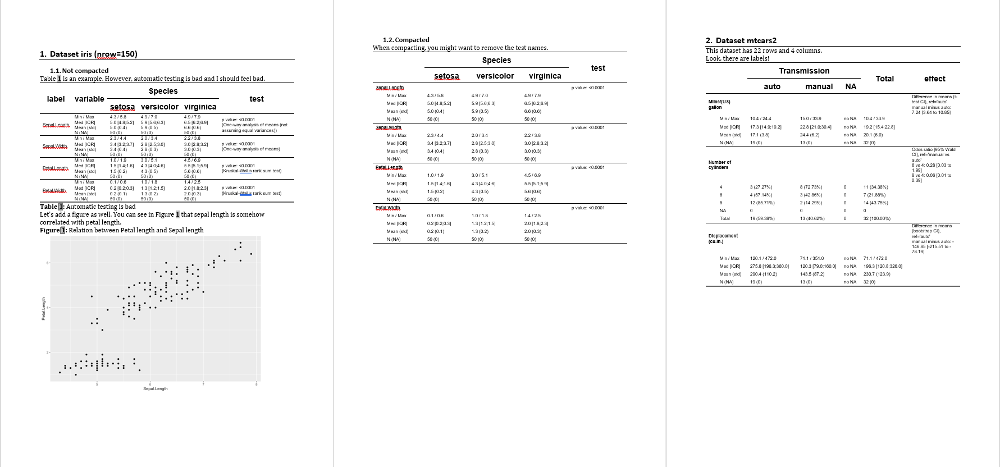

Make automatic reports
Dan Chaltiel
2025-11-18
Source:vignettes/crosstable-report.Rmd
crosstable-report.RmdBeing inserted in automatic reporting is the ultimate goal of crosstables.
There are two cases to consider:
- You have a lot of tables and little text? You probably should use officer.
- You have a lot of text and a few tables? You probably should use Rmarkdown.
As I only find myself in the first case, this vignette will only talk about officer.
Create reports with officer
Output example
The real power of crosstable comes out when used with
David Gohel’s awesome package officer,
which allows to automatically create MS Word documents.
For the example, let’s try to create a document like this: 
You can also download this example here.
Code
This code will produce the example above.
First, we create 3 crosstables using available datasets, along with a
ggplot. Then, we start a document (using
officer::read_docx()), add some titles and paragraphs,
incorporate our tables and our plot, along with legends, and add some
page breaks. Note that the legends have a bookmark argument
that can be referred to in the text for automatic numbering.
library(officer)
library(ggplot2)
ct1=crosstable(iris, by=Species, test=TRUE)
ct2=crosstable(mtcars2, c(mpg,cyl,disp), by=am, effect=TRUE,
total="both", showNA="always")
ct3=crosstable(esoph)
crosstable_options(
crosstable_fontsize_body=8,
crosstable_padding_v=0,
crosstable_units="cm"
)
my_plot = ggplot(data = iris ) +
geom_point(mapping = aes(Sepal.Length, Petal.Length))
doc = read_docx() %>% #default template
body_add_title("Dataset iris (nrow={nrow(iris)})", 1) %>%
body_add_title("Not compacted", 2) %>%
body_add_normal("Table \\@ref(table_autotest) is an example. However, automatic
testing is **bad** and I should feel **bad**.") %>%
body_add_crosstable(ct1) %>%
body_add_table_legend("Automatic testing is bad", bookmark="table_autotest") %>%
body_add_normal() %>%
body_add_normal("Let's add a figure as well. <br> You can see in Figure \\@ref(fig_iris)
that sepal length is somehow correlated with petal length.") %>%
body_add_figure_legend("Relation between Petal length and Sepal length",
bookmark="fig_iris") %>%
body_add_gg2(my_plot, w=14, h=10, scale=1.5) %>%
body_add_break() %>%
body_add_title("Compacted", 2) %>%
body_add_normal("When compacting, you might want to remove the test names.") %>%
body_add_crosstable(ct1, compact=TRUE, show_test_name=FALSE) %>%
body_add_break() %>%
body_add_title("Dataset mtcars2", 1) %>%
body_add_normal("This dataset has {nrow(ct3)} rows and {x} columns.",
x=ncol(ct3)) %>%
body_add_normal("Look, there are labels!") %>%
body_add_crosstable(ct2, compact=TRUE)For demonstration purposes, I tried to cover as many features as possible, so it contains multiple syntaxes for the same result. Of course, you should use whatever syntax you are most comfortable with.
Output
To see the resulting Word document, use:
write_and_open(doc, "vignette_officer.docx")While you are still working on your code, you might want to omit the
name so that you open the docx file in a temporary file for a quick peek
(write_and_open(doc)). This will prevent the errors that
happen when the file is already open.
You can also use print(doc, "vignette_officer.docx") if
you don’t want the file to open right away.
Functions
Here is a brief description of the functions used in this example:
-
officer::read_docx(): creates a bare MS Word document -
body_add_title(): adds a title paragraph of any level -
body_add_normal(): adds a normal style paragraph. You can also incorporate variables using the syntax{nrow(ct3)}and references using the syntax\\@ref(my_bookmark). It also support Markdown syntax for bold, italics, colored text… Seehelp(body_add_normal)to see the details. -
body_add_crosstable(): adds a crosstable -
body_add_figure_legend()andbody_add_table_legend(): adds a figure/table legend. Thebookmarkis the key that can be added elsewhere inbody_add_normal(). -
body_add_gg2(): adds a ggplot. Unlikeofficer::body_add_gg(), you can change the unit using theunitsargument or the optionsoptions(crosstable_units="cm").
crosstable comes with many officer-like
functions to help you create your report, see the full list in the references.
Also, browse https://davidgohel.github.io/officer/ for more insight about how you can use officer.
Styles
Crosstable uses Word styles extensively.
Here, I used the default template of
officer::read_docx() that comes with default styles. In
your own custom template, you can edit all styles (for instance you can
make “Normal” have a bold font of size 8) and add your own. See the
official documentation on how to use templates.
The best example here is body_add_list(), which is
supposed to add a bullet list. Unfortunately, the default template does
not come with list styles so you will have to add one to your custom
template before using it:
doc = read_docx("my_template.docx) %>% #your custom template
body_add_list(c("this is item 1", "this is item 2"), style="bullet")
#alternatively, you can define the style globally and use the ordered parameter
options(crosstable_style_list_unordered="bullet")
options(crosstable_style_list_ordered="numbered")
doc = read_docx("my_template.docx) %>%
body_add_list(c("this is item 1", "this is item 2"), ordered=FALSE)See ?crosstable_options for a list of all styles you can
specify globally and use officer::styles_info(doc) to see
which one are available in your template.
Note that you might sometimes encounter the error “Error: could not match any style named ‘xxx’” if you are not careful.
Post-production for table/figure legends
If you added some legends or TOC titles, MS Word might ask you to “update the fields”, to which you should answer “Yes”. This will trigger the automatic numbering of tables and references.
Autofit macro for large tables
Auto-fitting from outside MS Word has its limits, and large tables might still overflow your document.
If so, you can use MS Word inner autofit tools on each table one by
one
(Table Tools > Layout > AutoFit > AutoFit Window),
which can be really tedious.
But fear not! You can also use a MS Word macro to do the job for you. Here is how:
In the R console, run
generate_autofit_macro()to generate the filecrosstable_autofit.basin your working directory.In MS Word, press Alt+F11 to open the VB Editor.
In the Editor, go to
File>Importor pressCtrl+Mto open the import dialog, and importcrosstable_autofit.bas. There should now be a “CrosstableMacros” module in the “Normal” project.Run the macro, either from the VB Editor or from
View>Macros>View Macros>Run.
This process will make the macro accessible from any Word file on
this computer. Note that, in the Editor, you can also drag the module to
your document project to make the macro accessible only from this file.
The file will have to be named with the docm extension
though.